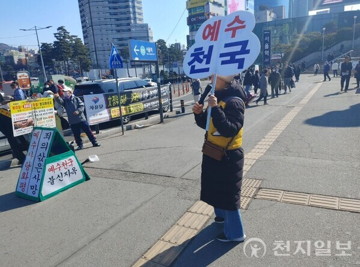
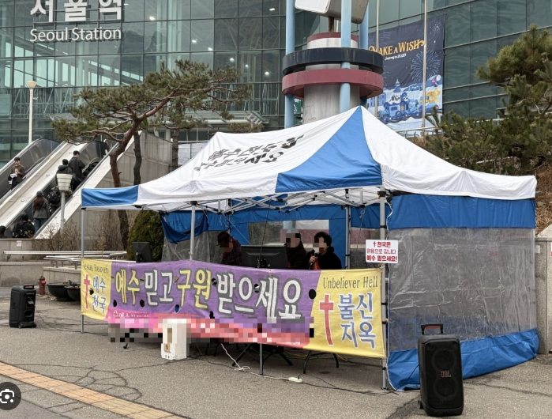

광장에서 술마시는건 잘 안보였고 저딴것들만 많이 보였는데... 점마들이나 치우지


광장에서 술마시는건 잘 안보였고 저딴것들만 많이 보였는데... 점마들이나 치우지
서울역 막걸리랑 오물 썩는냄새 최악이었지
거기 길바닥에서 똥싸는 노숙자보고
웬만하면 안가게됨
삼청교육대 부활이 시급하다 진짜...지방내려갈때마다 인간 혐오걸림. 시발 음식물 쓰래기봉투 뒤져서 자리잡고 꺼내먹고 있지 않나 냄새란 냄새는 다 풍기면서 지나가는 사람 붙잡고 돈달라고 협박하지 않나 병신같은거 진짜... 저런애들 싹 다 잡아다가 광산에 집어 쳐 넣고 사회 교육 다시 시키는게 맞다고 생각한다
서울역쪽은 서울에 사는 정신병자들 성지같은 느낌임
정신병 환자는 어떤 이유에서인지 서울역에 끌리는거 같음
의외로 정신병환자는 ㅈㄴ 많고 서울역이 유동인구가 많아서 그래보이는걸수도있음
노숙자 개씹극혐 버러지새끼들
서울역 & 경복궁 인근 시위 및 종교활동 금지 해야함
도대체 사람이 왜 저러는거지
저짝이아닐텐데
2번출구 앞에서 판깔고 마시는건 여러번 봤는데 거기도 적용되려나
트럼프 존
하프라이프2 시민보호기동대가 필요하다
제발 잡아다 넣어줘
외국인들에게 보여주기 개쪽팔린 공간 1위
종교쟁이들이야 시끄럽게 굴어서 더 눈에 띌 뿐이고.. 서울역 광장 보이는 곳 앞에서 잠깐 일한적 있는데 여름철 그늘가에 노숙자들 모여서 술까는거도 솔직히 심각했음
광장이나 역에서 선교활동 금지좀 시켰으면 아니 팻말이나 마이크라도
종교쟁이 새끼들 포크레인과 몽둥이로 다 밀어버려야함
정신병 걸린 새끼들 잡아다가 뇌수술로 얌전히 만들어야지
다른 국민들에게 피해주고 국가망신이나 시키는 나라의 해충새끼들
서울역은 노숙자도 문제지만 종교활동이랍시고 개소리 내는 애들의 소음공해가 어마어마하던데
서울역 근처 너무 무서운데, 노숙자랑 저것들 치울수 없음? 나름 의미있는 서울역인데, 외국인들이 이런것들 본다는게 부끄럽네
이제 서울역에서 술먹던 노숙자들은 건너편 어린이공원에 집결하겠네
과태료 5만원 안내고 배째라 하면 어떡해?
구금할 수 있어?
이런거 올리는 것 보니 형 주변에 노숙자 있어?
저 광신도들이 훨씬 시끄러움
한푼줍쇼
저 싸그리 다치워야지
뭔가 '서울'역이라는 대표적 네이밍에 기대하고 갔다가 충격을 금치못했음
종교쟁이들 쫙깔려서 확성기로 뭐라하고있고
노숙자들은 구석도아닌 길 가양에서 실시간으로 똥오줌 갈기는거보고 세기말 감성 느낌
나도 이거때매 아무리 시위,집회의 자유가 있다지만 장소는 제한해야되지 않나 싶음
도쿄역앞이랑 서울역앞이랑 차이 너무 심함 진짜
그짓거리하는게 종교를 전파하기 위함이아니라 '자기만족'의 이기심에 하는게 진짜 같잖음
저거보면서 누가 어떤 일반인이 음 믿어봐야겟군 하냐고
일반인은 차치하고 외국인 관광객들 도착해서 처음보는 서울 풍경일텐데
국격 진짜 어메이징하게 떨어질듯
이런거는 진짜 몰아내든가 해야하는데 에휴
지원금을 끊어야지
노숙인 한명당 년간 2천 이라며
나같아도 노숙하려면 서울에서 하겠다
요즘 서울역앞은 노숙인들보다 종교인들이 문제던데
저 종교시설은 잠시 자리비웠을때 수르스트뢰밍 한캔 따서 내용물 투척하고 튀면 해결 될것같은데 ㅋㅋㅋㅋㅋ
예수가 노숙자는 구원을 안해주나보네.
구석에 있는 노숙자들 대상이지